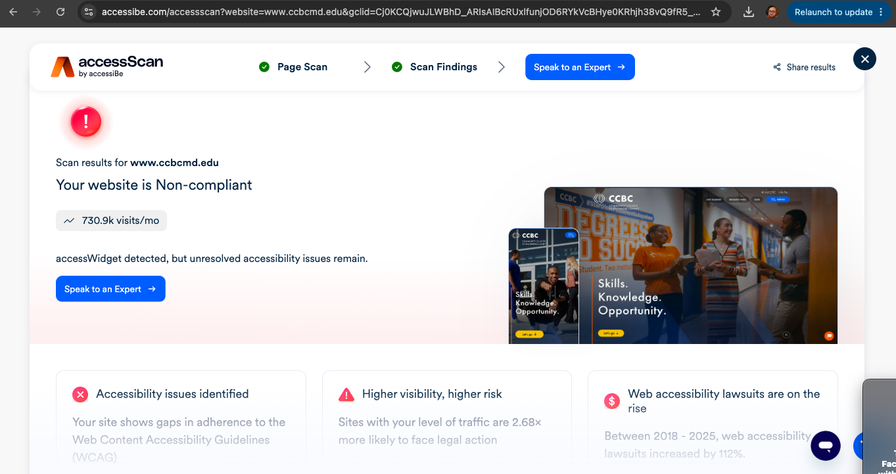
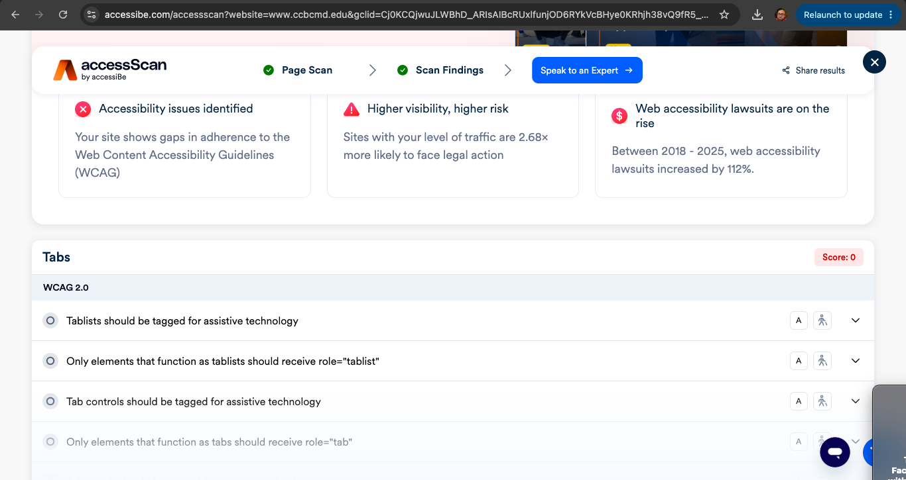
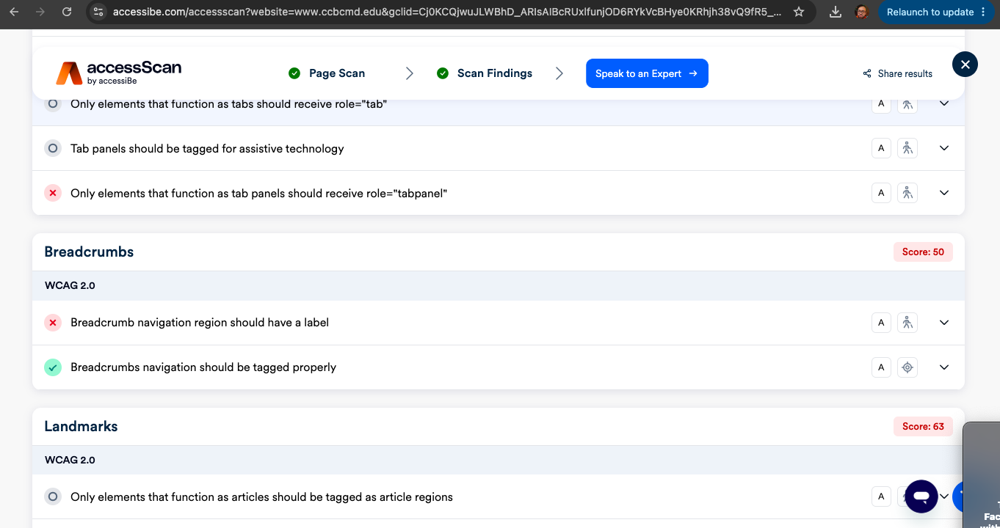
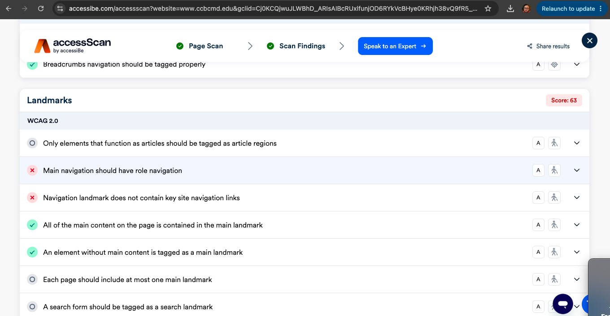

Website Information
What is the URL of the website?
https://www.ccbcmd.edu/
What is the name of the website?
Community College of Baltimore County (CCBC)
Who is the site's target audience?
The target audience includes current and future students, faculty, staff, and people looking for information about CCBC.
Website Organization and Design
How is the site organized?
The CCBC website uses hierarchical organization. It has a main home page with navigation links to major sections of the website. From those sections, users can find more specific information.
Which CRAP Design Principle does the site use?
The CCBC website uses the principle of contrast. For example, the text and buttons stand out from the background, making them easier to see and read.
Accessibility Evaluation
What did the accessibility checker find?
The accessibility checker reported that the CCBC website is currently non-compliant because some accessibility issues remain. The checker also found several areas where the site performed well.
Accessibility Results
- Interactive Content received a score of 99.
- General accessibility received a score of 100.
- Forms received a score of 100.
- Graphics received a score of 100.
- Text Content received a score of 100.
- Metadata received a score of 100.
- Lists received a score of 100.
- Breadcrumbs received a score of 50.
Accessibility Issues Identified
- Some tab elements were not properly tagged for assistive technology. The checker reported that tablists, tabs, and tab panels need the correct ARIA roles when they are used.
- The breadcrumb navigation region should have a label so screen reader users can identify it more easily.
- The checker found an issue with an aria-labelledby reference that should point to a valid element ID.
The checker also found that buttons, links, forms, images, page titles, page language, and several other accessibility features were handled correctly.
Overall Accessibility Result
The overall result was reported as non-compliant because accessibility issues still remain. However, many individual areas of the website received good or perfect scores.
Accessibility Checker Results




Usability Evaluation
What is the site's effectiveness?
The CCBC website is effective because it helps users find information and complete tasks accurately. The navigation is organized, and users can find information without much difficulty.
What is the site's efficiency?
The site is efficient because users can move through the navigation and find information without having to take too many steps. The menus and links make it easier to find what you are looking for.
How is the engagement?
The site is pleasant to use and fits the purpose of a community college website. The information is organized clearly, and the design makes the site feel professional and easy to use.
Recommendation
The CCBC website is already easy to navigate, but one recommendation would be to improve the accessibility issues identified by the checker. The site could improve the labeling of breadcrumb navigation and make sure tab elements and ARIA attributes are correctly set up for screen reader users.
Continuing to test the website for accessibility when making updates would also help keep the site easier to use for everyone.